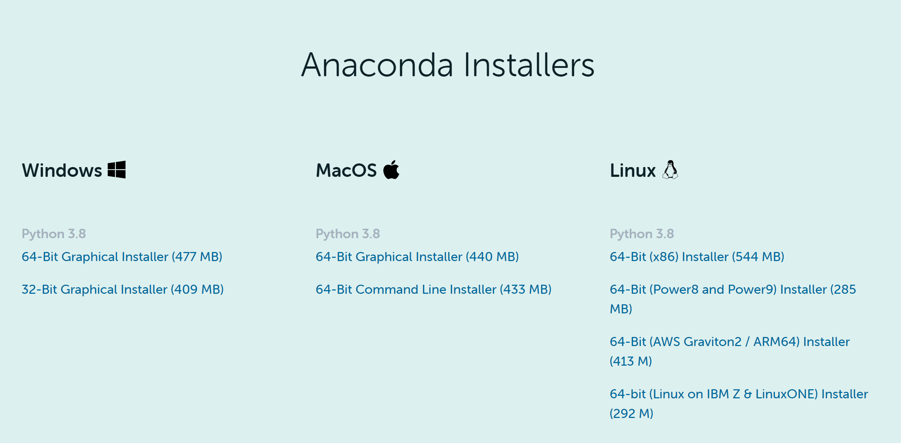

写给文科生的Python入门和数据处理教程
Python for Social Scientists
2021-09-23
1 引言
本文是Python入门和数据处理教程，基于经管类本科课堂教学用的讲义，以供同学们自学和参考。
p.s. 本文使用RStudio以及R的Bookdown包写成。
1.1 本书目标
- 负基础Python入门
对于首次接触编程的人，可能对计算机和操作系统的有关知识（如“命令行”，“路径”等）缺乏了解。本文尽量把有关的知识都介绍到，争取做到“会打字就能学Python”。
- Python数据处理
- 基本目标：替代Excel
- 进阶目标：对科研常用数据，如Wind和CSMAR数据库、CFPS和CHIP等微观调查数据、统计局数据、oTree实验数据等，按照研究要求进行清洗、剪裁、整合以及绘图，为进一步分析（如回归）制作出合适的数据集。
- 金融数据分析
待定：视教学情况。
1.2 本书不足
- 由于课时非常紧张，有很多有意义的内容不得不舍弃，包括但不限于：
- 函数式编程和数据流思想
- 面向对象编程
- 单元测试
- 作者水平有限，很多内容未必是最优做法，只能争取尽量清晰和明确。
- 要顾及同学们的计算机基础有高有低，有些地方不得不写得比较啰嗦。
1.3 使用的程序和版本
- 使用Anaconda以及附带的Spyder作为主要的编程环境
- Python版本3.6或以上。（涉及Type Hints和f-string等）
1.4 把Python安装到你的电脑里
要完成任何一个编程任务，首先要借助Python现有的巨大的程序库（一般可称为库Library，或者包Package）。本课程主要针对经济类数据分析，涉及的包比较多。为了避免逐个安装，我们采用比较简单的做法，直接安装Anaconda。这是一个所谓“Python发行版”，里面包含了Python的执行程序（解释器等），以及大量的科学计算用包。一般的数据分析工作，直接安装这个即可。
下载地址：https://www.anaconda.com/products/individual#Downloads
直接百度Anaconda也能找到这个链接。按照你自己的操作系统下载 ，一般选择最新版，现在的电脑一般选择64bit的安装文件，安装过程采用默认选项即可。
